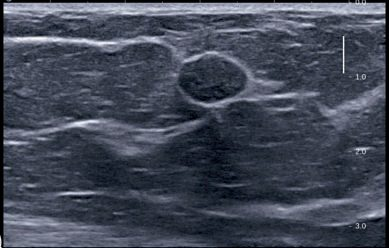
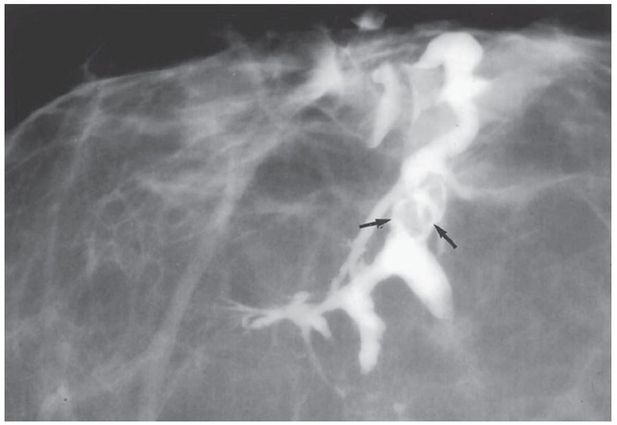
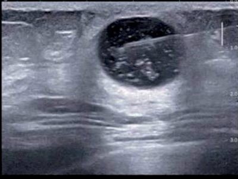
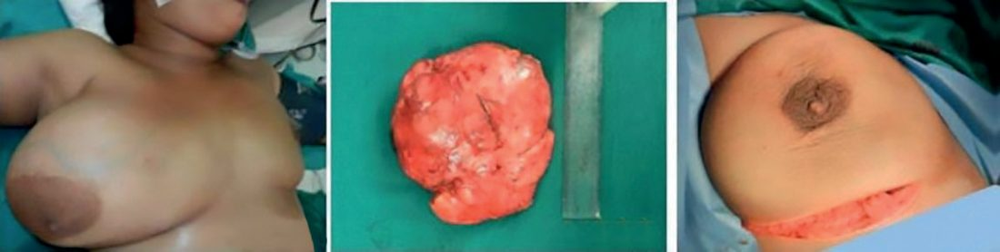

Benign Breast Disease (Fibroadenoma/Cysts)
Summary
- Most benign breast conditions (including fibroadenoma, breast cysts and fibrocystic change) arise from minor aberrations of the normal processes of breast development, cyclical hormonal activity and involution, a concept termed Aberrations of Normal Development and Involution (ANDI) [1][2].
- A discrete breast lump is commonly a fibroadenoma in young women and a cyst in middle-aged women [1].
- Fibroadenomas are the most common breast tumour in women under 30, while breast cysts typically occur between 35 and 55 years of age [1][3].
- Diagnosis rests on triple assessment (clinical examination, imaging and tissue sampling), and the great majority of these lesions are managed conservatively [1][4].
- There is no NICE guideline on benign breast disease.
- NICE's involvement stops at the referral threshold in NG12, and everything downstream of the breast clinic door is governed by the UK multi-college best practice diagnostic guidelines for patients presenting with breast symptoms, produced by the Association of Breast Surgery with the Royal College of Radiologists Breast Group, the Royal College of Pathologists, the Royal College of General Practitioners, the Royal College of Nursing and others [5][6].
- That document is explicit that it covers the process of diagnosis only and does not extend into the management of diagnosed benign disease [6], so the treatment sections below rest on the textbooks, while the diagnostic pathway is UK-specified in detail.
Definition
- Benign breast disease encompasses a spectrum of clinical, mammographic and histological findings previously labelled with confusing terms such as fibrosis, adenosis, epitheliosis, fibroadenosis and fibrocystic disease.
- These terms do not correspond well to clinical or histological features, and the ANDI concept (developed by the Cardiff Breast Clinic) was introduced to better classify benign breast disorders as aberrations of normal development, cyclical change and involution [1].
- A fibroadenoma is a benign neoplasm of the breast with a dominant fibrous element, common in young women [4], composed of stromal and epithelial elements [3].
- Breast cysts within the parenchyma are fluid-filled cavities that vary in size from microscopic to large palpable masses [3].
- The use of the term "disease" for fibroadenosis or fibrocystic disease is considered a misnomer, as these histological changes (fibrosis, adenosis, microcyst formation, epithelial hyperplasia, lymphocytic infiltration) are a spectrum of normal and are commonly found in women without breast complaints [4].
Pathophysiology
- The breast is a dynamic structure altered by cyclical oestrogen and progesterone, which act as growth factors on the epithelial and stromal cells of the terminal ductal lobular unit (TDLU).
- ANDI pathogenesis involves disturbances extending from normal perturbation to well-defined disease across three phases, lobule development (15–25 years), cyclical change (15–50 years) and involution (35–55 years).
- Lobular proliferation is believed to lead to fibroadenoma formation, and involution to cyst formation [1].
- Hyperplasia of the epithelium (more than two cell layers lining ducts or acini, with or without atypia) and cyst formation from kinking and narrowing of ductules causing microcyst then macrocyst formation are the principal aberrant processes [1].
- Cyst pathogenesis is thought to arise from destruction and dilatation of lobules and terminal ductules; fibrosis at or near the lobule combined with continued secretion causes unfolding of the lobule and expansion of an epithelial-lined, fluid-containing cavity, influenced by ovarian hormones, which explains variation with the menstrual cycle [3].
- Fibrocystic changes represent an exaggerated response of breast stroma and epithelium to circulating and locally produced hormones and growth factors, manifesting as pain, tenderness and nodularity [3].
- Fibrocystic disease encompasses fibromatosis, sclerosing adenosis, apocrine metaplasia, duct adenosis, and epithelial, ductal and lobular hyperplasia; sclerosing adenosis produces microcalcifications that can mimic breast cancer but itself carries no malignancy risk unless atypia is present [7].
- Sclerosing adenosis is prevalent during the childbearing and premenopausal years and has no malignant potential, whereas multiple intraductal papillomas, atypical ductal hyperplasia and atypical lobular hyperplasia do carry malignant potential [8].
Clinical features
The most common manifestations of ANDI are breast pain (mastalgia) and benign nodularity, which is often bilateral, most conspicuous in the upper outer quadrant, and may be cyclical, appearing 1–2 weeks before menstruation and regressing with menses [1]. Cyclical mastalgia begins around day 14 of the cycle, increases in severity until day 27–28, usually affects both breasts, and is relieved by the onset of menses; non-cyclical mastalgia occurs at any time and is often well localised, sometimes with a tender "trigger point" [1].
Fibroadenoma
Fibroadenoma usually presents in women under 30 years as a smooth, rubbery, mobile, discrete, painless breast lump ("breast mouse"), which may be multiple or giant [2]. It is the most mobile of all breast lesions and fully merits the "breast mouse" description, being spherical or ovoid, occasionally lobulated, with a smooth surface and firm rubbery consistency [4].
Cysts and fibrocystic change
Breast cysts are common, benign, symmetrical, round lumps that may be tender, solitary or multiple [2], typically presenting suddenly and causing alarm; a solitary cyst is smooth and spherical with variable consistency from soft to hard [1][4]. Fibrocystic change affects 30–60% of women aged 30–50 years, producing lumpy breast texture from localised fibrosis and cyst formation, usually in the upper outer quadrant, with associated cyclical breast pain and swelling that usually subsides after menopause [2].
| Type of lump | Age (years) | Pain | Surface | Consistency | Axilla |
|---|---|---|---|---|---|
| Fibroadenoma | 15–35 | No | Smooth and bosselated | Rubbery | Normal |
| Benign nodularity | 20–55 | Often | Indistinct | Mixed | Normal |
| Solitary cyst | 40–55 | Occasional | Smooth | Soft to hard | Normal |
| Carcinoma | 35+ | Uncommon | Irregular | Hard | Nodes may be palpable |
Table reformats the comparison of four common breast lumps [4].
Presentation-based differential
Browse's tabulates the most likely diagnoses by presenting complaint, which is the practical way to structure the differential in clinic [4]:
| Presentation | Most likely diagnoses |
|---|---|
| Painless lump | Carcinoma, cyst, fibroadenoma, area of fibroadenosis |
| Painful lump | Area of fibroadenosis, cyst, periductal mastitis, abscess |
| Pain and tenderness but no lump | Cyclical breast pain, non-cyclical breast pain, rarely a carcinoma |
| Nipple discharge | Duct ectasia, intraductal papilloma, ductal carcinoma in situ, associated with a cyst |
| Changes in the nipple or areola | Duct ectasia, carcinoma, Paget's disease, eczema |
| Changes in breast size or shape | Pregnancy, carcinoma, benign hypertrophy, rare large tumours |
Table reformats the presentation-to-diagnosis mapping [4].
Phyllodes tumour and fat necrosis
Phyllodes tumour presents as a firm, rapidly growing palpable mass, usually in women aged 40–50 years, with a classical "leaf-like" appearance on histology [2]; it can appear as a large, sometimes massive tumour with an unevenly bosselated surface, occasionally with ulcerated overlying skin from pressure necrosis, but remains mobile on the chest wall [1]. Fat necrosis presents as a firm, irregular mass, often after trauma or bruising, which must be differentiated from cancer and may show oil cysts on mammography, resolving spontaneously [2]; traumatic fat necrosis usually occurs in stout, middle-aged women and may mimic carcinoma with skin tethering and nipple retraction [1]. Fat necrosis is one of only two conditions other than carcinoma that can fix a lump to the skin, the other being a pointing abscess [4].
Etiology
- The breast undergoes cyclical alterations driven by oestrogen and progesterone during every menstrual cycle, which act as growth factors on the TDLU; disturbances in this cyclical physiology underlie ANDI [1].
- Breast cysts have several contributory causative factors as part of ANDI, including lobular involution, increased secretion, ductile obstruction, loss of stroma, hyperoestrogenaemia and hormone replacement therapy [1].
- The cause of cyclical mastalgia is unclear; hormone imbalance, high caffeine intake, low dietary essential fatty acids, water retention and psychoneurosis are not supported by research, although most patients respond to antioestrogen treatment, suggesting excessive breast tissue responsiveness to circulating oestrogen [1].
- Duct ectasia and periductal mastitis appear to be associated with smoking and diabetes [3]; duct ectasia risk factors also include smoking and nipple piercings [7].
Diagnosis
The diagnostic mainstay for breast symptoms is "triple assessment": clinical history and examination, radiological imaging (ultrasonography and/or mammography), and tissue sampling (cytology or histology), a combined approach with a diagnostic accuracy approaching 100% [1][2][4].
Ultrasonography is the primary imaging modality in young women with dense breast tissue and can distinguish cystic from solid lesions; a well-circumscribed, mobile, solid mass in a young woman is suggestive of fibroadenoma with an extremely low likelihood of malignancy, while simple cysts do not require further work-up [1]. Mammography is of little help in discriminating between cysts and fibroadenomas, but ultrasonography readily distinguishes them [3].
- For fibroadenoma in patients 35 years or younger, observation with biannual ultrasound requires all three of: a clinically benign-feeling mass, imaging consistent with fibroadenoma, and a confirmatory core needle biopsy; otherwise excisional biopsy is needed, and patients over 35 years generally require excisional biopsy to ensure diagnosis [7].
- A smooth-walled cyst without a solid component is classified as BI-RADS 2 and requires only observation; a solid component in the cyst wall defines a complex cyst needing core biopsy to rule out cystadenocarcinoma, distinct from a complicated cyst containing floating debris that moves with posture change [1].
- If a cyst recurs more than twice, core needle biopsy should be performed to evaluate for solid elements [3].
- Vacuum-assisted biopsy (8G or 11G needles) allows more extensive sampling and is useful for microcalcifications and removal of benign lumps such as fibroadenoma [1].
- Nipple discharge that is single-duct, serous, sanguineous and spontaneous (the "four S") should be considered pathological and warrants triple assessment [1].


- Referral.
- A breast lump under the age of 30 is a non-urgent referral, not a suspected cancer pathway referral; the suspected cancer pathway starts at age 30 for an unexplained breast lump, and at age 50 for discharge, retraction or other changes of concern in one nipple only [5].
- The ABS guidelines add that a woman under 50 with nipple discharge that is from multiple ducts, or intermittent, and neither blood-stained nor troublesome, can be managed at least initially by the GP [6], and that a patient with minor or moderate breast pain and no discrete palpable abnormality should be referred non-urgently only when initial treatment fails or symptoms persist unexplained [6].
Not every patient needs all three arms of triple assessment. The UK guidelines list the situations where one-stop assessment can safely stop short, specifically: resolved symptoms with no clinical abnormality; areas of benign breast change and diffuse nodularity without a dominant mass; simple cysts whether aspirated or not; breast pain; non-bloody nipple discharge; and gynaecomastia [6]. Breast pain alone is not an indication for imaging [6].
- Imaging is chosen by age.
- Ultrasound is the method of choice for the majority of women under 40 and during pregnancy and lactation; mammography and ultrasound for women aged 40 and over.
- For women under 40 with clinically benign or uncertain lesions (P2, P3), ultrasound alone suffices, if it confirms normal, benign or probably benign findings such as a cyst or circumscribed solid lesion, mammography is unlikely to add diagnostic information.
- Mammography should be performed under 40 for lesions suspicious on clinical or ultrasound criteria (P4/P5 or U4/U5), and considered in patients aged 35–39 with clinically indeterminate lesions (P3) in whom ultrasound is normal [6].
Which solid lesions may be diagnosed without a needle biopsy. Patients with ultrasound features categorised U3–U5 should undergo needle biopsy, but three categories of solid lesion may be safely diagnosed on clinical and imaging information alone [6]:
| Lesion | Criteria for omitting needle biopsy |
|---|---|
| Presumed fibroadenoma | Patient under 25 years, and ultrasound shows a solid lesion with benign features: ellipsoid shape (wider than tall), well-defined outline with smooth edges, or fewer than four gentle lobulations |
| Presumed fat necrosis | Clinically benign (P2) with imaging typical of fat necrosis (U2, with or without M1/M2) |
| Presumed lipoma or hamartoma | Clinically benign (P2) with imaging typical of lipoma or hamartoma (U2, with or without M1/M2) |
Table reformats the solid lesions that may be diagnosed without biopsy [6]. If there is any doubt about the nature of the lesion, or any discrepancy between clinical and imaging features, needle biopsy should be performed [6]. Note that the UK age threshold for omitting biopsy in a presumed fibroadenoma is under 25, appreciably stricter than the textbook figure of 35 or under with a confirmatory core biopsy.
Multiple lesions. Where lesions share the same morphological features and are all U2, they are likely to be fibroadenomas and needle biopsy of one lesion (usually the presenting symptomatic one) is sufficient for diagnosis in a patient aged 25 or more [6].
Nipple symptoms. Generally only single-duct spontaneous discharges of genuine blood-stained, clear or serous colour need further evaluation; profuse bilateral milky discharge in a non-pregnant patient may justify measuring serum prolactin [6]. Nipple cytology is rarely of any value and must be treated with great caution after recent lactation, though dipstick testing for blood may eliminate those with dark brown discharges due to duct ectasia; punch biopsy is indicated where Paget's disease is suspected and for any unexplained nipple eczema or ulceration [6]. Recent unilateral nipple inversion is unlikely to be significant in the absence of any underlying palpable or mammographic abnormality, particularly if the inversion is correctable [6].
Scoring and Severity
The Breast Imaging Reporting and Data System (BI-RADS), developed by the American College of Radiology, categorises mammographic and ultrasonographic assessments from 0 to 6 with an associated probability of malignancy and follow-up recommendation [1]:
| BI-RADS | Interpretation | Probability of malignancy | Action |
|---|---|---|---|
| 0 | Incomplete assessment | Not applicable | Further imaging |
| 1 | Negative | Around 0% | Routine screening |
| 2 | Benign finding | Around 0% | Routine screening |
| 3 | Probably benign | Over 0% to 2% or less | Short-term follow-up |
| 4a/4b/4c | Suspicious | Over 2% to under 95% | Biopsy considered |
| 5 | Highly suggestive of malignancy | 95% or greater | Biopsy or surgery required |
| 6 | Known biopsy-proven malignancy | Not applicable | Definitive treatment |
Table reformats the BI-RADS categories [1]. A typical fibroadenoma on ultrasonography corresponds to BI-RADS 3, and a simple smooth-walled cyst to BI-RADS 2 [1]. The Cardiff–Lucknow breast nodularity scale is a five-point ordinal scale (0 = normal/non-nodular to 4 = severe) that grades benign nodularity objectively [1].
Phyllodes tumours are histologically classified by mitotic rate into benign (fewer than 4 per 10 high-power fields), borderline (4–9 per 10 HPF) and malignant (more than 10 per 10 HPF) [1]. Sabiston similarly classifies phyllodes into benign, borderline or malignant based on stromal cellular atypia, mitotic activity, infiltrative margins and the presence of pure stroma without an epithelial component [3], and the ABSITE Review notes roughly 10% of phyllodes tumours are malignant, based on more than 5–10 mitoses per HPF [7].
Treatment and Management
- Breast pain is managed with reassurance after normal triple assessment, a visual analogue scale pain chart over one month, adequate bra support, dietary measures (flax seed or evening primrose oil), topical NSAID cream for mild-to-moderate mastalgia, and, for pain scoring above 3 out of 10, systemic therapy with tamoxifen, danazol, ormeloxifene or an LHRH agonist for 3–6 months [1].
- Non-cyclical trigger-point pain may be relieved by local injection of a long-acting corticosteroid with lidocaine [1].
- Fibrocystic change and breast pain are also managed with cyst aspiration, reduced caffeine intake, hormone manipulation, evening primrose oil and vitamin E, and there is no role for surgical management of breast pain alone [2].
- Nodularity without a discrete lesion is managed with reassurance, or antioestrogen (tamoxifen or ormeloxifene) if needed to control symptoms within weeks [1].
Breast cysts are managed by ultrasound-guided aspiration; if fluid resolves completely and is not bloodstained, no further treatment is needed, whereas a residual lump or bloodstained aspirate warrants core biopsy or excision [1]. Most simple cysts confirmed on ultrasound need no further evaluation or aspiration if asymptomatic; large recurrent symptomatic cysts can be definitively treated by percutaneous excision with a vacuum-assisted device [3].
A clinically typical fibroadenoma confirmed on ultrasonography may simply be observed without biopsy, and regression with antioestrogen drugs (tamoxifen, ormeloxifene) has been observed [1]; once a tissue diagnosis confirms fibroadenoma, patients can be reassured that surgical excision is not needed, though excision may be considered if symptomatic or per patient preference [3]. Duct ectasia is treated with triple assessment followed by antibiotic therapy (co-amoxiclav, flucloxacillin, ciprofloxacin or cefixime, plus metronidazole or tinidazole for anaerobic cover) for 2–3 weeks if inflammation or infection is present [1].

Surgeries
- Indications for surgical excision of a fibroadenoma include age over 30 years, suspicious imaging features such as microlobulation, atypia on histology, size over 5 cm, family history of breast cancer, and patient preference; excision in older patients should include a rim of normal tissue as it may harbour malignancy or a phyllodes tumour [1].
- Giant fibroadenomas (over 5 cm, often rapidly growing, occurring at puberty) can be enucleated through a submammary (Gaillard Thomas) incision [1].
- Giant fibroadenoma excision is recommended given its unusually large size, and juvenile fibroadenoma warrants excisional biopsy if larger than 5 cm, growing, or persisting into adulthood [3].
- Phyllodes tumours are treated by wide local excision with a 2 cm margin, including overlying skin and underlying pectoralis major, owing to high local recurrence; massive, recurrent or malignant tumours require mastectomy, with postoperative radiotherapy for recurrent or malignant disease and systemic chemotherapy for malignant phyllodes [1].
- Local excision or excisional biopsy of benign phyllodes is curative; intermediate/borderline and malignant phyllodes require wide excision with a 1 cm or greater margin, with total mastectomy if the tumour is large relative to breast size, and no axillary staging is indicated [3].
- Wide local excision with 1 cm negative margins and no axillary lymph node dissection is recommended for phyllodes tumours [7].
- Cyst aspiration under ultrasound guidance is both diagnostic and therapeutic [1][4].
- Vacuum-assisted biopsy and excision devices are used for removal of benign lumps such as fibroadenoma [1].
- Profuse nipple discharge or subareolar abscess associated with duct ectasia is treated by major mammary duct excision; non-bloody but profuse discharge may be treated by microdochectomy (single duct) or major duct excision (multiple ducts) [1].

- The UK guidelines stop short of recommending operations, but they do specify when a benign presentation warrants a surgical outcome from the diagnostic pathway.
- For persistent higher-risk single-duct discharge with no other identifiable abnormality, diagnostic retro-areolar open biopsy may be necessary, and occasionally duct disconnection may be indicated for benign but troublesome high-volume discharge [6].
- If Paget's disease is suspected but imaging and biopsy are benign, reassess and consider the need for further biopsy rather than discharging [6].
Cases that require further review or diagnostic intervention after initial assessment, and should be brought back to the multidisciplinary meeting rather than discharged, are: discordance between elements of triple assessment, such as persistent suspicious clinical findings with normal imaging; equivocal biopsy results, specifically B3 or B4 core biopsy; severe breast pain where treatment needs assessment; breast inflammation, infection, cellulitis or abscess; and nipple discharge causing significant symptoms where surgical intervention may be considered [6]. Otherwise the majority of patients with benign disease can be discharged from the clinic [6].
Needle aspiration of clinically obvious cysts in patients with known recurrent cystic disease may be performed following initial clinical assessment, but appropriate imaging with mammography and ultrasound should still be carried out in such cases [6].
Complications
The relative risk of cancer with fibroadenoma ranges from 1.5–1.7 if simple to 3.4–3.7 in the presence of epithelial hyperplasia, and complex fibroadenoma with a family history carries a relative risk of 3.0–4.0, particularly for lobular carcinoma [1]. Cancer arising in a newly discovered fibroadenoma is exceedingly rare (0.2%) [3]; complex fibroadenoma, with epithelial calcification, apocrine hyperplasia or metaplasia, sclerosing adenosis, or cysts over 3 cm, carries a slightly increased cancer risk [7].
Women with breast cysts carry a small increased risk of cancer, and affected women should attend clinic with each new "cyst" [4]; intracystic carcinoma is exceedingly rare, identified in only 3 of over 3,000 cyst aspirations in one series (0.1%) [3].
Phyllodes tumours may rarely metastasise via the bloodstream despite their size, and local recurrence is common after simple excision without margin, requiring re-excision [1][4]; recurrence occurs most often within the first 2 years after excision, and metastases from malignant phyllodes spread haematogenously, most commonly to the lungs [3].
Duct ectasia can lead to periductal inflammation, fibrosis and nipple retraction [1], and periductal mastitis may progress to abscess formation and fistula after the abscess discharges [4]. Galactocele complications include non-resolution due to inspissated material, and calcification [1].
Prognosis
- A clinically and radiologically typical fibroadenoma has an extremely low likelihood of malignancy and can be safely observed, with regression sometimes seen on antioestrogen therapy [1].
- Once fibroadenoma is confirmed by tissue diagnosis, patients can be reassured that excision is not required, reflecting the generally benign, stable course of this lesion [3].
- Breast cysts generally resolve after aspiration, although they may recur [1][2].
Benign and borderline phyllodes tumours have a good prognosis after excision with adequate margins, although local recurrence can occur, particularly within the first two years, requiring close follow-up with examination and imaging; malignant phyllodes behave similarly to sarcomas, with metastatic spread mainly to the lungs and limited benefit from chemotherapy [3].
The residual risk after a benign triple assessment is quantified in the UK guidelines and is worth knowing when reassuring a patient: delayed diagnosis of cancer after triple assessment in women who present with symptoms and are subsequently diagnosed with cancer is approximately 0.2% [6]. Patients in whom triple assessment is negative should be advised to seek advice from their GP if they remain concerned, or if there is a change in symptoms or signs [6].
Reassurance itself needs care. Patients who perceive themselves to have a high risk of breast cancer may continue to feel distressed following a benign diagnosis, so it is important to address these misperceptions accurately at the initial consultation rather than at discharge [6]. All patients should also be made aware of the breast screening programme and told not to await their next screening appointment if they develop symptoms [6].
References
- Bailey & Love's Short Practice of Surgery, 28th ed., Ch. 58 The breast
- Oxford Handbook of Clinical Surgery, 5th ed., Ch. 6 Breast surgery
- Sabiston Textbook of Surgery, 22nd ed., Ch. 68 Diseases of the Breast
- Browse's Introduction to the Symptoms and Signs of Surgical Disease, 6th ed., Ch. 13, Table 13.1
- NICE Guideline NG12: Suspected cancer: recognition and referral (2015, updated 2026), 1.4.1; 1.4.3 www.nice.org.uk
- Association of Breast Surgery, Royal College of Radiologists Breast Group, Royal College of Pathologists and partners: Best practice diagnostic guidelines for patients presenting with breast symptoms (November 2010; stated review date November 2012), 1.3 Nipple symptoms; 1.4 Breast pain; 1.6 Communication; 2.1 Assessment; 2.1 C Needle biopsy; 2.1 Communication; 2.2 One-stop assessment; 2.3; 2.3 Breast lump, lumpiness, change in texture; 2.3 Imaging; 2.3 Multiple lesions; 2.4 Clinical assessment; 2.4 Nipple symptoms; 2.4 Other investigations; 2.4 Outcome of assessment; 2.5 Breast pain; 3.1 The MDM; Acknowledgements; Statement of purpose associationofbreastsurgery.org.uk
- The ABSITE Review, 2022, Ch. 24 Breast – Benign Breast Disease
- Schwartz's Principles of Surgery: ABSITE and Board Review, Ch. 17 Breast